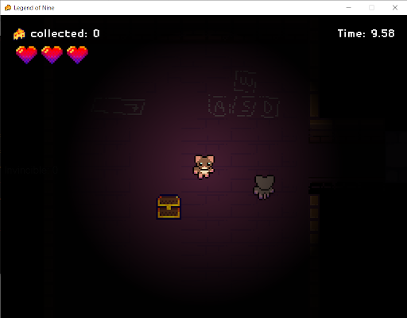
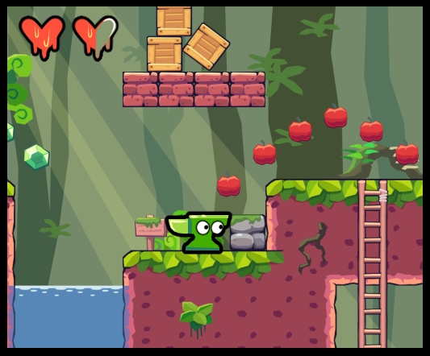
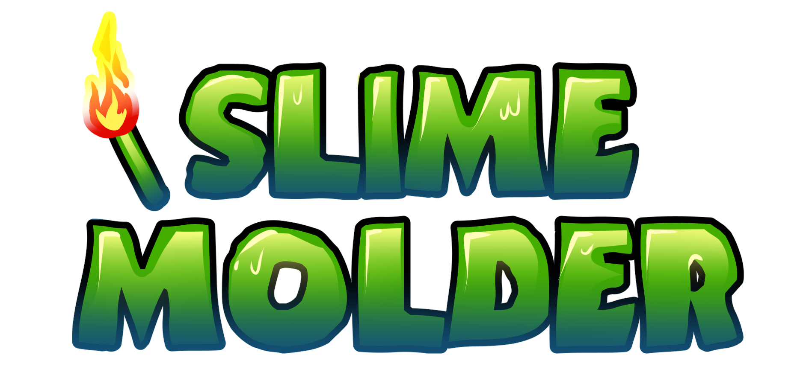
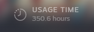

As a hobby, I enjoy doing game development, and have worked on several projects related to this. In 2023, I worked with a team of other students to develop a 2D Zelda-style RPG from the ground up in Java. For this project, I worked to develop a level editor that works by reading a 2D array of tile IDs from a text file, a map loading system that only loads assets that are currently in the viewport for efficiency. Besides this, I also created all of the spritework and visual assets.
Most recently, for my senior project, I worked alongside a team of other students to develop a Python-based platformer game. Here is some (early) concept art I have made for it:
 I also have spent a decent amount of time developing miscellaneous personal projects in RPGMaker MV and GameMaker (currently). Here is the amount of time I spent on creating a single demo in RPGMaker MV back in 2020...
